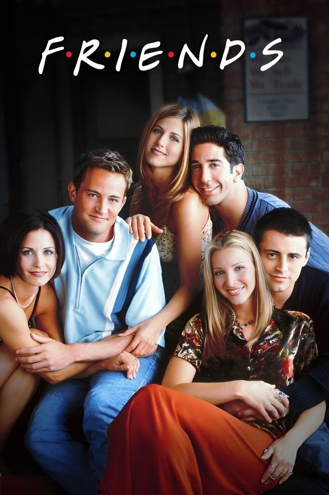

Comedia
Friends
Composta por Rachel, Monica, Phoebe, Joey, Chandler e Ross, a dinâmica do grupo se desenvolve principalmente nos sofás da cafeteria Central Perk e nos apartamentos vizinhos de Monica e Joey. A produção tornou-se um dos maiores fenômenos da história da televisão ao retratar com leveza, humor inteligente e muito acolhimento aquela fase da vida em que os amigos são a sua verdadeira família.
Informações
- Ano: 1994
- Gênero: Sitcom
- Duração: 10 temporadas e 236 episódios
- Atores: Jennifer Aniston, Courteney Cox, Lisa Kudrow, Matt LeBlanc, Matthew Perry e David Schwimmer.